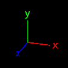
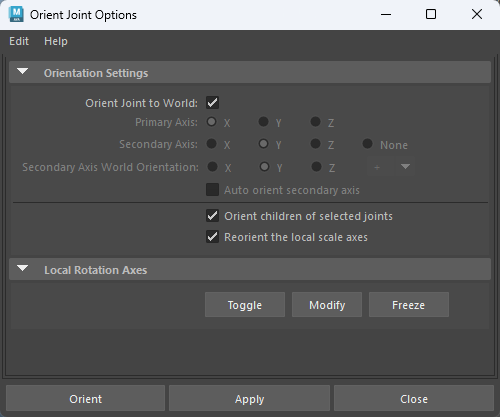
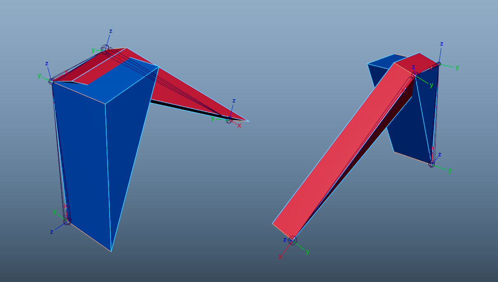

Understanding Joint Orientations
19 November 2026
When it comes to creating rigs in Maya, making sure your joints’ orientations are set up properly is crucial to allow for predictable rotations. In this short article, I’ll be clearing up some of the confusion surrounding Maya’s Orient Joint Tool.
The three axes must always be perpendicular to each other and be arranged in a specific layout (you don’t need to manage this yourself, Maya does it internally) This may be different in other software packages, but in Maya, X-positive is considered right, Y-positive is up and Z-positive is forward (coming out of the screen towards you). When orbiting around your scene, you can watch the graphic change in the bottom-left corner of the viewport to keep track of which way is which.

The world axis graphic in the corner of the viewportYou’ll find the Orient Joint tool in the Skeleton menu of the Rigging menu set. Click the square next to it or shift-click the menu item to open its option box. Once it opens, click the Toggle button near the bottom of the window to reveal the selected joints rotational axes. This will save a lot of time reselecting things throughout the rest of the tutorial.

The Orient Joint options windowThe first option you’ll see is Orient Joint to World. This one is fairly easy to understand and due to its simplicity enabling it hides most of the other options. Confirming the settings with your joints selected will lead to them all matching the graphic mentioned earlier in the corner of the viewport (the world axes). Despite most of the other options being greyed-out, you can still decide whether to “orient children” or “reorient local scale axes”. We won’t be worrying about the latter in this article, but the former simply saves you the hassle of selecting child joints (that is, every joint downstream from the chosen one).
There are also options for toggling, modifying and freezing the local rotation axes. We’ve already been through the first one. The other two allow you to manually change the rotational axes instead of relying on the automatic controls in the top section of the window. After selecting a joint, click Modify and the rotation manipulator will appear. Despite its appearance, this is not the same as rotating the joint itself so be careful. Play around with the manipulator and you’ll notice the local rotation axes change to follow it (for best results, I recommend having your rotation tool set to object mode before doing this so that the manipulator remains aligned with the axes). After making your changes, click freeze to finalize them. This is essentially the alternative to the apply button when making manual adjustments.
Manually changing the rotation axes has its uses, but when working with multiple joints it's faster and more accurate to use the options in the top section of the window instead. If you haven’t already, uncheck Orient Joint to World to reveal all the other settings.
When rigging it’s best to have one axis pointing down the chain/bone towards the child joint. This is referred to as the primary axis and for simplicity’s sake I prefer to set this to X. Below this you can pick a secondary axis, the secondary axis world orientation (either positive or negative) and whether or not to automatically orient the secondary axis. You may be wondering why there’s no mention of the tertiary axis, and this is because it’s automatically calculated once the primary and secondary axes are set (remember that they must always be perpendicular). Using the same reasoning as before, I keep the secondary axis set to Y, although feel free to choose your own as long as it doesn’t conflict with the primary axis. You can also choose None, but I admit I don’t fully understand how this works, just that it’s less predictable as you’re leaving Maya to decide.
This next part is where things get complicated. Even though we’ve told X to point down the chain, we still need to decide which direction Y should point. First, make sure Auto Orient Secondary Axis is disabled. You can choose X, Y or Z for the world orientation, as well as positive or negative, leaving you with 6 options. Depending on the shape of your skeleton, some of these options might appear to have the same result for a specific joint.
Keeping in mind the primary axis must point down the chain, and the secondary axis must be perpendicular to it, the option you choose here will decide which direction the secondary axis “floats” toward despite its constraints. You might also notice that the changes didn’t apply to the end/terminal joints. Select these end joints and enable Orient Joint to World. Despite its name, this essentially makes the rotation axes of these joints match their parents, and is good practice to use.
Once all that makes sense, enable Auto Orient Secondary Axis and we’ll start to cover some serious rocket science.
The Maya documentation has this to say about the setting:
"Orients the secondary axis using neighbouring joints. Activating Auto orient secondary axis also sets root joints to the plane defined by the child/grand-child joints and zeroes the joint orientation of terminal joints (that is, joints without children, so they match their parent's orientation)."
[source]
That last part about zeroing the joint orientation of terminal joints is convenient as that’s what we just discussed. To help you understand the rest, let’s have a look at a skeleton setup that vaguely resembles the joints you would use for a biped’s pelvis, clavicle, shoulder and wrist.
Auto Orient works by calculating a hypothetical triangular plane with its three vertices snapped to the selected joint, its immediate parent and immediate child (or in the case of the root joint, itself, immediate child and grandchild). Considering the terminal joint inherits its orientations from its parent, that means our 4-joint setup has 2 planes to work with.

In this example, I’ve created two planes that follow these rules for the clavicle and shoulder. The pelvis and wrist use the same planes as the clavicle and shoulder respectively. I then selected the faces of the planes and extruded them outwards for easier visualization.
Regardless of which secondary axis world orientation you set, the secondary axis is constrained to the perpendicular edge made visible thanks to the extrusion. It can still point forward or backward along this edge, leaving us with only 2 possible outcomes. This is where the secondary axis world orientation decides the winner. In the example shown, I’ve chosen X for the primary axis, Y for the secondary axis and Z-negative for the secondary axis world orientation.